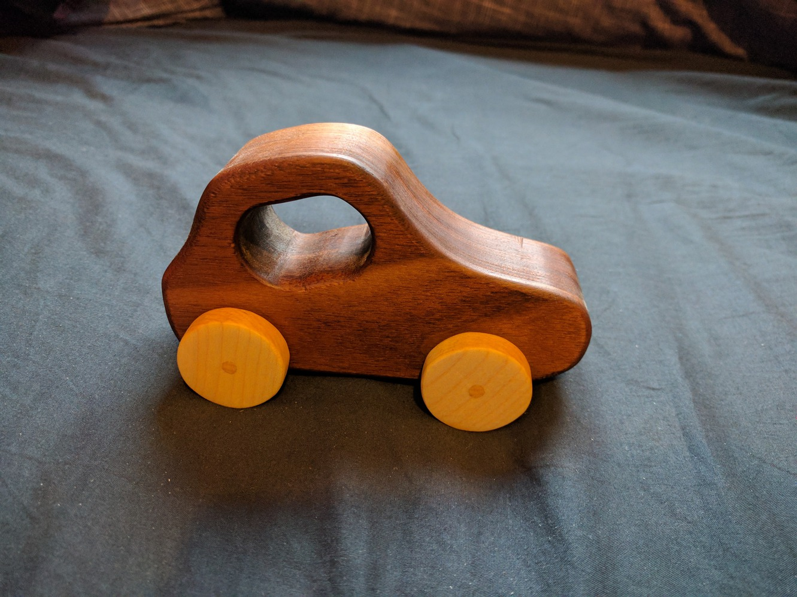

A toy car I made for my nephew's first birthday. Made from walnut and maple.
Completed on 26/06/2017.
I started off with a simple idea of the shape I wanted.
The walnut I have is pretty thin so I laminated two pieces into a thicker block.
With the design taped on I used a coping saw to cut the rough shape.
I smoothed out the shape using a drum sander attachment on my drill press, then used a round file to round over the edges.
The way I made the wheels was pretty scary. I put a pin in my cross cut sled then mounted a square of maple on the pin, in the centre of where the wheel would be. Then I kept turning the piece on the pin, cutting little chunks off at a time until it was round. I had to hold the piece down with a pencil, and it was pretty unsecure and probably a dumb idea. I've since got a small bandsaw which should make cutting curves a lot safer.
Starting to take shape.
I couldn't be bothered finding a place to buy thin dowels for the axles, so I turned an old bent riving knife into a dowel maker.
After drilling a hole the size of the dowel I want into the riving knife, I planed the corners off a maple blank with a block plane, then mounted it in my drill to run it through the hole. After a light sanding the result is a clean, thin dowel.
I used a drill press and forstner bit to hog out most of the material for the window, then shaped it with a file.
The pieces with a finish of boiled linseed oil.
All glued up. The dowel fits loose through a hole in the body, with the wheels glued onto either end. I ended up having to sand down the dowels after sawing off the excess that stuck out of the wheels, so refinished the outside of the wheels. I'm not incredibly happy with the finish on the inside of the window, I wasn't thorough enough with sanding the inside so it's very rough.
{kind=link}
{kind=link}
{kind=link}
{kind=link}
{kind=link}
{kind=link}
{kind=link}
{kind=link}
{kind=link}
{kind=link}
{kind=link}